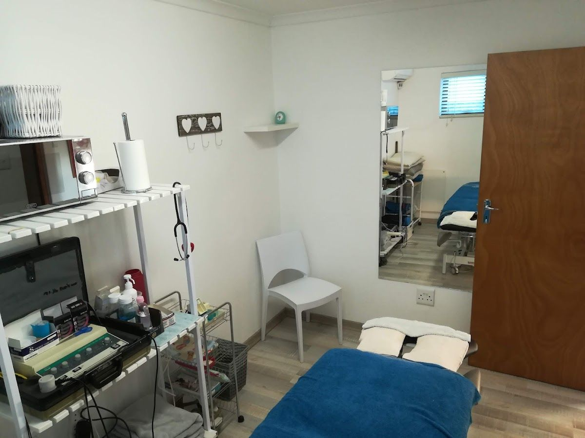
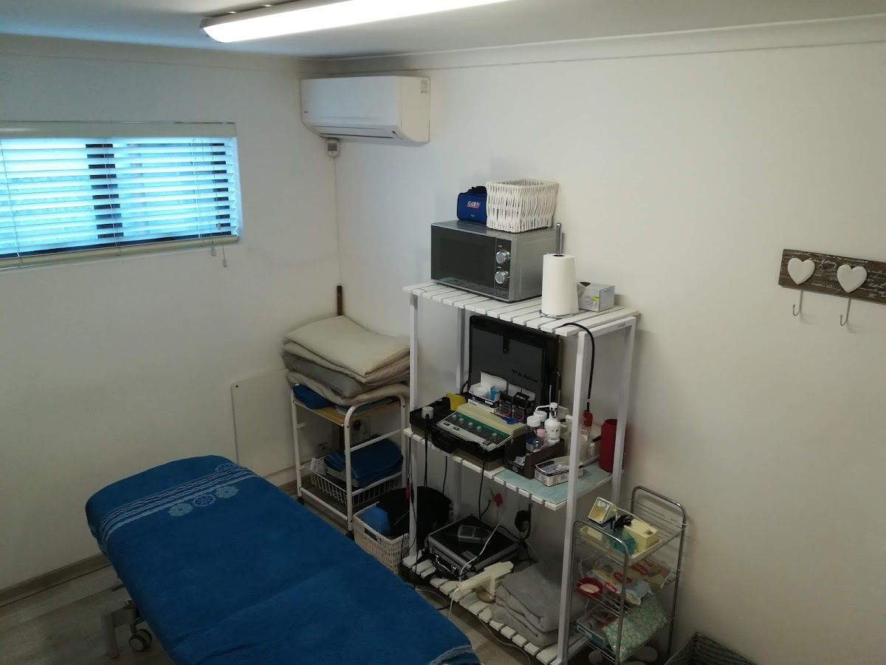
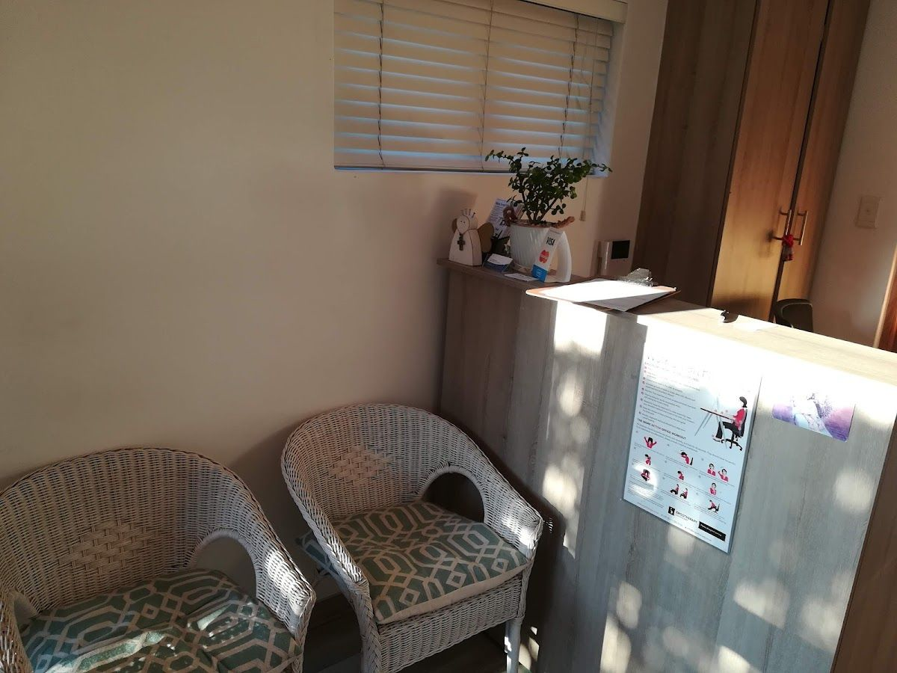

Roleen Mostert Physiotherapy offers dedicated physiotherapy services to the community of Stellenbosch. Our mission is to help you achieve optimal physical health and mobility through personalized treatment plans. We understand the unique needs of our clients and are committed to providing high-quality care.
Founded by Roleen Mostert, our practice combines years of expertise with a compassionate approach. Our team is skilled in addressing a wide range of physical ailments, from sports injuries to chronic pain conditions. We believe in a holistic approach, focusing not only on immediate relief but also on long-term well-being.
At Roleen Mostert Physiotherapy, we value trust, integrity, and excellence. Our promise is to support you every step of the way on your journey to recovery. We are proud to serve the Stellenbosch community and look forward to helping you achieve your health goals.
Explore our range of physiotherapy services designed to enhance your physical health and well-being.
Our physiotherapy sessions are tailored to your specific needs, focusing on pain relief, improved mobility, and prevention of future injuries.
Here is what our clients say about us.
"Man these ladies can dish out some pain, but professionally and with a smile. 10/10 will always recommend."— Peet Janse van Vuuren, ⭐⭐⭐⭐⭐
"Great service and care all round. Helped me with a painful shoulder impingement. I would definitely recommend."— Michael Thorne, ⭐⭐⭐⭐⭐
"Very friendly and helpful. Always feel better when I leave. Thanks."— Heinrich Blom, ⭐⭐⭐⭐⭐
"Been going here whenever I have back problems. Always been treated extremely well."— Thamu Mnyulwa, ⭐⭐⭐⭐⭐
"Extremely friendly, and very helpful. I highly recommend Roleen Mostert Physiotherapy!"— Charl Deacon, ⭐⭐⭐⭐⭐



We'd love to hear from you — reach out to us anytime.